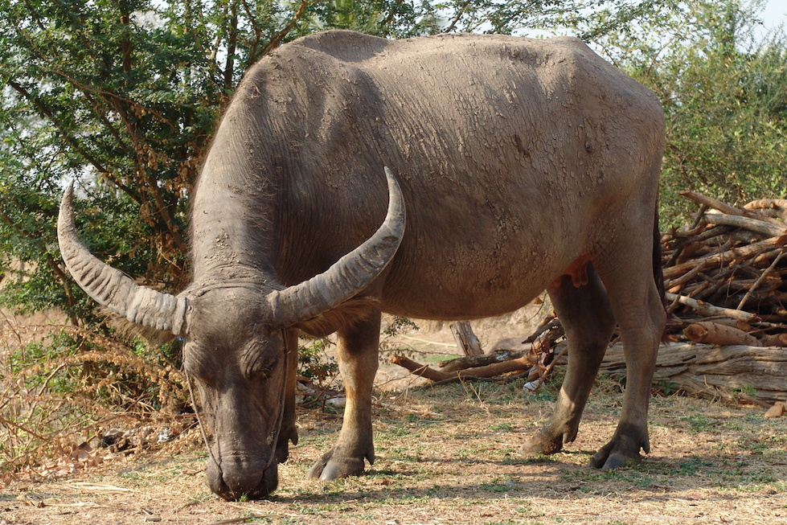

Ca dao, Tục ngữ
Ca dao
- Trâu ơi ta bảo trâu này
- Trâu ra ngoài ruông trâu cày với ta
- Cấy cày vốn việc nông gia
- Ta đâu trâu đấy ai mà quản công
- Bao giờ lúa trổ (đơm) bông
- Thì còn ngọn cỏ ngoài đồng trâu ăn
Tục ngữ
- Con trâu là đầu cơ nghiệp
- Tậu trâu, lấy vợ, làm nhà
- Trong ba việc ấy ắt là khó thay
Trâu
Trâu Trâu (còn gọi là trâu nước) là một loài động vật thuộc họ Trâu bò (Bovidae), phân bộ Nhai lại (Ruminantia), nhóm sừng rỗng (Cavicornes), bộ Guốc chẵn (Actiodactyla), lớp Thú có vú (Mammalia). Chúng sống hoang dã ở Nam Á, Đông Nam Á, miền bắc Úc.[2] Trâu thuần dưỡng, tức trâu nhà được nuôi phổ biến nhất ở vùng nhiệt đới châu Á. Một số nhỏ có mặt ở Nam Mỹ và Bắc Phi.[3]
| Phân loại khoa học |  | |
|---|---|---|
| Lớp: | Thú | |
| Bộ: | Guốc chẵn | |
| Họ: | Trâu bò | |
| Phân loài | ||
|
||